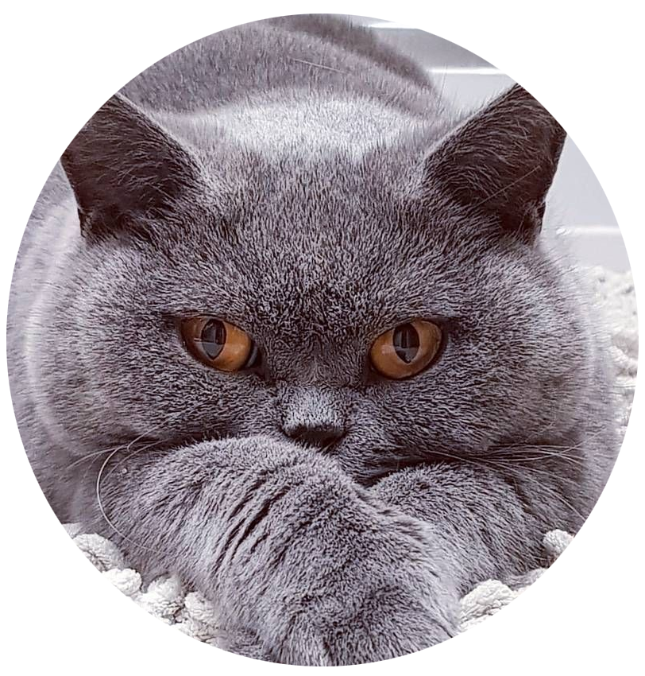
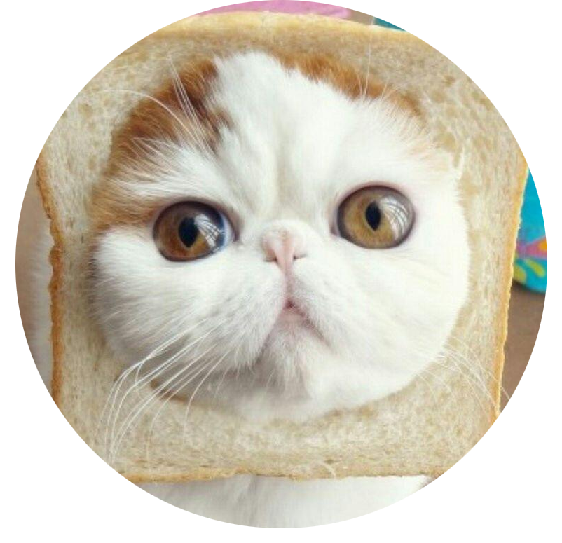

Goof The Game - компьютерная игра, разработанная скандально известной компанией CodeJerks в 2021 году для Windows. Является учебным проектом для Яндек.Лицея.
Игра, вдохновлённая ролевой игрой "Griffins and Gargoyles" из известного сериала "Ривердейл", выполнена в стиле настольных игр в компьютерном варианте.
Гармонично подобранная цветовая гамма и иллюстрации позволяют окунуться в волшебную атмосферу сказочного леса, из которого игроку надо найти выход. (дойти до финиша)
Чтобы дойти до финиша, игрок может перемещать свою фишку вперёд, назад, вправо и влево. Ходы получают как в классических настолках, кидая кубик.
Отдельное внимание надо уделить мини-играм, в которые придётся сыграть в течении игры. Они являются одним из самых важных частей этой игры. На них и сделана главная ставка разработчиков.
Супер пупер интересный текст
Супер пупер интересный текст
Супер пупер интересный текст
Супер пупер интересный текст
Супер пупер интересный текст
 